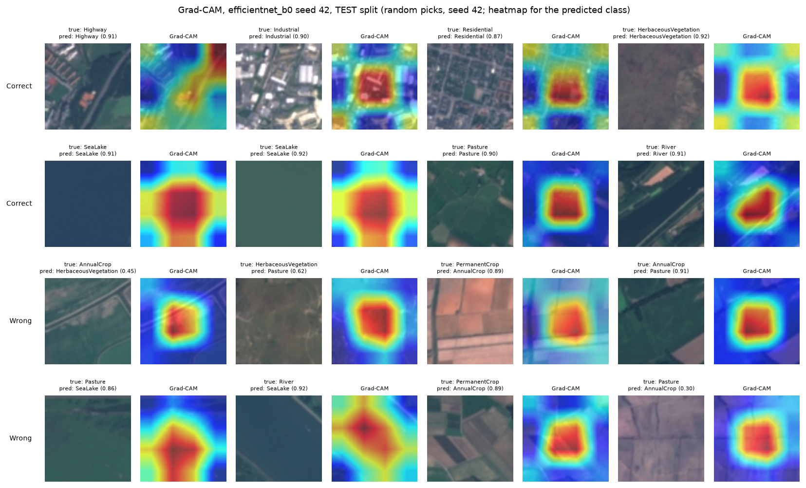

How TerraScan works, and where it doesn't.
From a satellite picture to a land-use map in four steps, the models we compared, and the checks that keep the numbers honest.
From orbit to map.
The same steps run for the four showcase cities and for any area you draw in the Explorer.
Five models, one test.
All trained on European satellite squares (EuroSAT) and scored on the same held-out test images. Click a column to sort.
Europe is not India.
A model that is nearly perfect on European test images got much worse on Indian ones. Fine-tuning on a small set of labelled Indian squares fixed part of that.
Where the model looks.
Grad-CAM colours the part of a square that pushed the model towards its answer: red mattered most. Right answers on top, wrong ones below.

Limits, in plain words.
What to keep in mind before trusting any map on this site.
Accuracy was measured on Indian test areas in Gujarat. Maps of other places, including ones you draw, are untested.
A square can hold a road, houses and a field, but it gets one name. Small changes inside a square are invisible.
Both maps use December–February pictures. Seasonal fields can look different in other months.
Accuracy is averaged over 3 training runs, but the maps come from one of them (seed 42), so they don't show run-to-run spread.
“Map your own area” uses the 5 clearest pictures, not all of them, and may pick another satellite tile, so it can differ slightly from the showcase.
Who did what.
This project was built with an AI coding assistant. Here is exactly how the work was split.